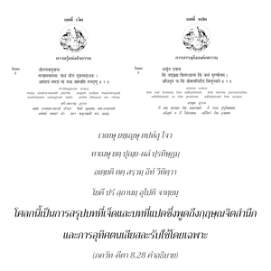

บุคคลผู้รับเอาวิถีแห่งการอุทิศตนเสียสละรับใช้มาปฏิบัติจะไม่สูญเสียผลที่ได้รับจากการศึกษาคัมภีร์พระเวท ปฏิบัติพิธีบูชา ปฏิบัติความเพียร ให้ทาน หรือแสวงหาปรัชญาความรู้และกิจกรรมเพื่อผลทางวัตถุ เพียงแต่ปฏิบัติการอุทิศตนเสียสละรับใช้เขาจะบรรลุถึงสิ่งเหล่านี้ทั้งหมด และในที่สุดจะบรรลุถึงพระตำหนักนิรันดรสูงสุด

โศลกนี้เป็นการสรุปบทที่เจ็ด และบทที่แปดซึ่งพูดถึงกฺฤษฺณจิตสำนึกและการอุทิศตนเสียสละรับใช้โดยเฉพาะ เราต้องศึกษาคัมภีร์พระเวทภายใต้การนำของพระอาจารย์ทิพย์ ปฏิบัติสมถะ และบำเพ็ญเพียรอย่างมากในขณะที่อยู่ภายใต้การดูแลของพระอาจารย์ ผู้เป็นพฺรหฺมจารี (เณร) จะต้องอยู่ในบ้านของพระอาจารย์ทิพย์เหมือนเป็นผู้รับใช้ และต้องออกไปภิกขาจารตามบ้าน นำสิ่งของมาให้พระอาจารย์ รับประทานอาหารตามคำสั่งของพระอาจารย์เท่านั้น หากพระอาจารย์ละเลยไม่เรียกศิษย์มารับประทาน ศิษย์ก็จะต้องอดอาหารในวันนั้น สิ่งเหล่านี้คือหลักธรรมพระเวทบางประการที่ พฺรหฺมจรฺย ฝึกปฏิบัติ
หลังจากศิษย์ศึกษาคัมภีร์พระเวทอยู่กับพระอาจารย์ จากอายุห้าปีจนถึงอายุยี่สิบปี เขาอาจกลายมาเป็นสุภาพบุรุษผู้มีบุคลิกที่สมบูรณ์ การศึกษาคัมภีร์พระเวทไม่ใช่เป็นการพักผ่อนหย่อนใจเหมือนนักคาดคะเนที่นั่งบนเก้าอี้นวม แต่เป็นไปเพื่อการเปลี่ยนแปลงบุคลิก หลังจากได้รับการฝึกฝนเช่นนี้ พฺรหฺมจารี จะได้รับอนุญาตให้ไปแต่งงาน และใช้ชีวิตคฤหัสถ์ เมื่อเป็นคฤหัสถ์เขาต้องปฏิบัติการบูชาต่างๆ เพื่อบรรลุถึงความรู้แจ้งยิ่งขึ้น และต้องให้ทานตามกาลเวลา สถานที่ และตามผู้ปรารถนา โดยรู้จักแยกแยะระหว่างการให้ทานในความดี ในตัณหา และอวิชชาดังที่ได้อธิบายไว้ใน ภควัท-คีตา หลังจากเกษียณจากชีวิตคฤหัสถ์เมื่อรับเอาระดับของ วานปฺรสฺถ มาปฏิบัติ เขาจะบำเพ็ญเพียรอย่างเคร่งครัดไปอยู่ในป่า นุ่งห่มด้วยใบไม้ ไม่โกนหนวดเครา เป็นต้น จากการรับเอาระดับ พฺรหฺมจรฺย, คฤหัสถ์, วานปฺรสฺถ และในที่สุด สนฺนฺยาส มาปฏิบัติเขาจะพัฒนาไปสู่ระดับชีวิตที่สมบูรณ์ บางคนพัฒนาไปยังอาณาจักรสวรรค์ และเมื่อเจริญมากยิ่งขึ้นจะได้รับอิสรภาพในท้องฟ้าทิพย์อาจอยู่ใน พฺรหฺม-โชฺยติรฺ ที่ไร้รูปลักษณ์ ในดาวเคราะห์ ไวกุณฺฐ หรือใน กฺฤษฺณโลก นี่คือวิถีทางที่วรรณกรรมพระเวทได้กำหนดไว้
อย่างไรก็ดี ความสวยงามของกฺฤษฺณจิตสำนึก คือ จากการกระทำเพียงสิ่งเดียวด้วยการอุทิศตนเสียสละรับใช้ เราสามารถข้ามพ้นพิธีกรรมต่างๆ รวมทั้งระดับชีวิตต่างๆ ทั้งหมด
คำว่า อิทํ วิทิตฺวา แสดงให้เห็นว่าเราควรเข้าใจคำสั่งสอนที่ศฺรีกฺฤษฺณทรงให้ไว้ในบทนี้ และบทที่เจ็ดของ ภควัท-คีตา เราควรพยายามเข้าใจบทเหล่านี้ไม่ใช่แบบวิชาการ หรือแบบคาดคะเนทางจิต แต่จากการสดับฟังในการคบหาสมาคมกับเหล่าสาวก บทที่หกถึงบทที่สิบสองเป็นสาระสำคัญของ ภควัท-คีตา หกบทแรก และหกบทสุดท้ายเหมือนกับปกหน้า และปกหลังที่ห่อหุ้มหกบทกลาง ซึ่งองค์ภควานฺทรงเป็นผู้ปกป้องคุ้มครองโดยเฉพาะ หากใครโชคดีพอที่เข้าใจ ภควัท-คีตา โดยเฉพาะในหกบทกลางนี้ด้วยการคบหาสมาคมกับเหล่าสาวก ชีวิตของเขาจะได้รับการสรรเสริญเหนือการบำเพ็ญเพียร การทำพิธีบูชา การให้ทาน การคาดคะเนทั้งหลายทั้งปวง เป็นต้น เพราะเขาสามารถบรรลุถึงผลแห่งกิจกรรมเหล่านี้ทั้งหมดด้วยเพียงแต่ปฏิบัติในกฺฤษฺณจิตสำนึกเท่านั้น
ผู้ที่มีความศรัทธาบ้างใน ภควัท-คีตา ควรเรียนรู้ ภควัท-คีตา จากสาวก เพราะในตอนต้นของบทที่สี่ได้กล่าวไว้อย่างชัดเจนว่า เหล่าสาวกเท่านั้นที่สามารถเข้าใจ ภควัท-คีตา ไม่มีผู้ใดเข้าใจจุดมุ่งหมายของ ภควัท-คีตา อย่างสมบูรณ์ ดังนั้น เราควรเรียนรู้ ภควัท-คีตา จากสาวกขององค์กฺฤษฺณไม่ใช่จากนักคาดคะเนทางจิต นี่คือลักษณะแห่งความศรัทธา หลังจากแสวงหาสาวก และในที่สุดได้มาคบสมาคมกับสาวกเมื่อนั้นจึงเริ่มต้นการศึกษา และเข้าใจ ภควัท-คีตา อย่างแท้จริง จากความเจริญก้าวหน้าในการไปคบหาสมาคมกับสาวกเขาถูกวางตัวในการอุทิศตนเสียสละ และการรับใช้นั้นจะปัดเป่าความสงสัยทั้งหลายที่ตนเองมีอยู่เกี่ยวกับองค์กฺฤษฺณ หรือองค์ภควานฺ เกี่ยวกับกิจกรรม รูปลักษณ์ ลีลา พระนาม และสิ่งอื่นๆ ขององค์กฺฤษฺณ หลังจากความสงสัยทั้งหลายเหล่านี้ได้ถูกทำให้กระจ่างขึ้นโดยสมบูรณ์ เขาตั้งมั่นในการศึกษา จากนั้นจะได้รับรสในการศึกษา ภควัท-คีตา และบรรลุถึงระดับแห่งความรู้สึกอยู่ในกฺฤษฺณจิตสำนึกเสมอ ในระดับที่เจริญมากขึ้นเขาจะอยู่ในความรักกับองค์กฺฤษฺณโดยสมบูรณ์ ระดับแห่งความสมบูรณ์สูงสุดของชีวิตนี้ สาวกจะย้ายไปยังพระตำหนักทิพย์ขององค์กฺฤษฺณในท้องฟ้าทิพย์ โคโลก วฺฤนฺทาวน สถานที่ที่สาวกมีความสุขนิรันดร